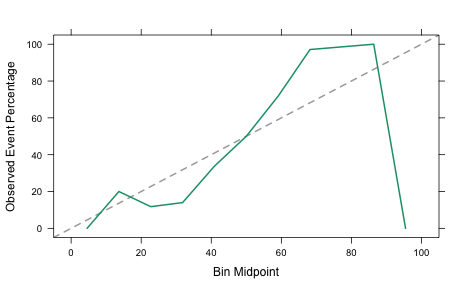
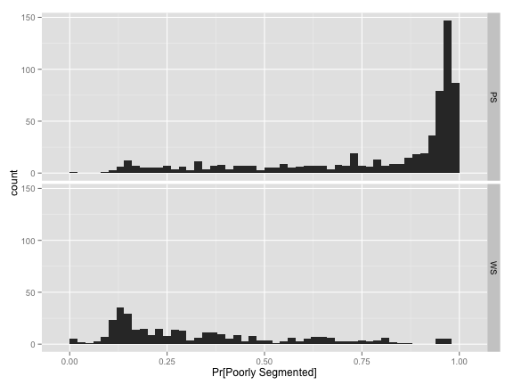

Calibration Affirmation
In the book, we discuss the notion of a probability model being “well calibrated”. There are many different mathematical techniques that classification models use to produce class probabilities. Some of values are “probability-like” in that they are between zero and one and sum to one. This doesn’t necessarily mean that the probability estimates are consistent with the true event rate seen with similar samples. Suppose a doctor told you that you have a model predicts that you have a 90% chance of having cancer. Is that number consistent with the actual likelihood of you being sick?
As an example, we can look at the cell image segmentation data use in the text (from this paper). The data are in the caret package. The outcome is whether or not a cell in an image is well segmented (WS) or poorly segments (PS). We try to predict this using measured characteristics of the supposed cell.
We can fit a partial least squares discriminant analysis model to these data. This model can use the basic PLS model for regression (based on binary dummy variables for the classes) and we can post-process the data into class probabilities and class predictions. One method to do this is the softmax function. This simple mathematical formula can used but, in my experience, doesn’t lead to very realistic predictions. Let’s fit that model:
library(caret)
data(segmentationData)
## Retain the original training set
segTrain <- subset(segmentationData, Case == "Train")
## Remove the first three columns (identifier columns)
segTrainX <- segTrain[, -(1:3)]
segTrainClass <- segTrain$Class
## Test Data
segTest <- subset(segmentationData, Case != "Train")
segTestX <- segTest[, -(1:3)]
segTestClass <- segTest$Class
set.seed(1)
useSoftmax <- train(segTrainX, segTrainClass, method = "pls",
preProc = c("center", "scale"),
## Tune over 15 values of ncomp using 10 fold-CV
tuneLength = 15,
trControl = trainControl(method = "cv"),
probMethod = "softmax")
## Based on cross-validation, how well does the model fit?
getTrainPerf(useSoftmax)
## TrainAccuracy TrainKappa method
## 1 0.8108 0.592 pls
## Predict the test set probabilities
SoftmaxProbs <- predict(useSoftmax, segTestX, type = "prob")[,"PS",]
## Put these into a data frame:
testProbs <- data.frame(Class = segTestClass,
Softmax = SoftmaxProbs)The accuracy and Kappa statistics reflect a reasonable model.
We are interested in knowing if cells are poorly segmented. What is the distribution of the test set class probabilities for the two classes?
library(ggplot2)
softmaxHist <- ggplot(testProbs, aes(x = Softmax))
softmaxHist <- softmaxHist + geom_histogram(binwidth = 0.02)
softmaxHist+ facet_grid(Class ~ .) + xlab("Pr[Poorly Segmented]")
Looking at the bottom panel, the mode of the distribution is around 40%. Also, very little of the truly well segmented samples are not confidently predicted as such since most probabilities are greater than 30%. The same is true for the poorly segmented cells. Very few values are greater than 80%.
What does the calibration plot look like?
plot(calibration(Class ~ Softmax, data = testProbs), type = "l")
This isn’t very close to the 45 degree reference line so we shouldn’t expect the probabilities to be very realistic.
Another approach for PLS models is to use Bayes’ rule to estimate the class probabilities. This is a little more complicated but at least it is based on probability theory. We can fit the model this way using the option probMethod = "Bayes":
set.seed(1)
useBayes <- train(segTrainX, segTrainClass, method = "pls",
preProc = c("center", "scale"),
tuneLength = 15,
trControl = trainControl(method = "cv"),
probMethod = "Bayes")
## Compare models:
getTrainPerf(useBayes)
## TrainAccuracy TrainKappa method
## 1 0.8108 0.5984 pls
getTrainPerf(useSoftmax)
## TrainAccuracy TrainKappa method
## 1 0.8108 0.592 pls
BayesProbs <- predict(useBayes, segTestX, type = "prob")[,"PS",]
## Put these into a data frame as before:
testProbs$Bayes <- BayesProbsPerformance is about the same. The test set ROC curves both have AUC values of 0.87.
What do these probabilities look like?
BayesHist <- ggplot(testProbs, aes(x = Bayes))
BayesHist <- BayesHist + geom_histogram(binwidth = 0.02)
BayesHist + facet_grid(Class ~ .) + xlab("Pr[Poorly Segmented]")
Even though the accuracy and ROC curve results show the models to be very similar, the class probabilities are very different. Here, the most confidently predicted samples have probabilities closer to zero or one. Based on the calibration plot, is this model any better?
Much better! Looking at the right-hand side of the plot, the event rate of samples with Bayesian generated probabilities is about 97% for class probabilities between 91% and 100%. The softmax model has an event rate of zero.
This is a good example because, by most measures,the model performance is almost identical. However, one generates much more realistic values than the other.